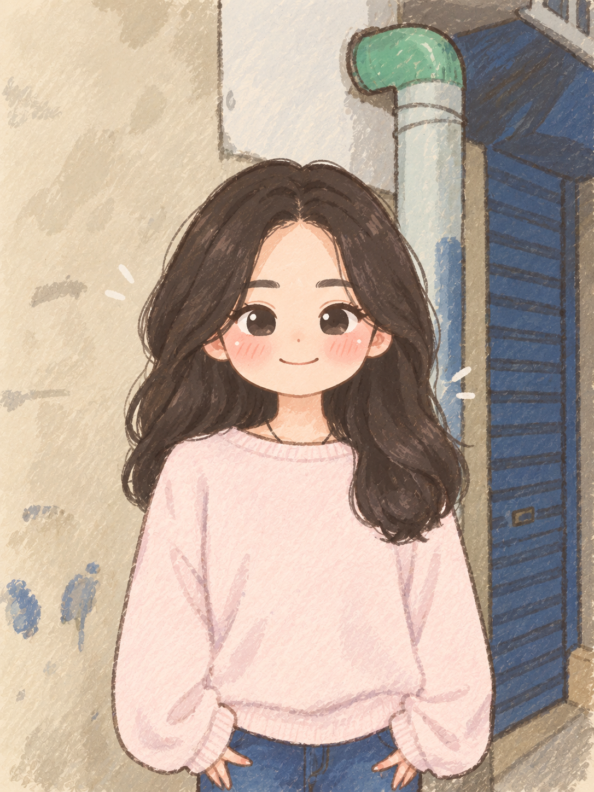

關於我
把平凡，變成值得收藏的作品。
目錄
一、自我介紹

大家好，我叫 李沂柔。
我是南臺科技大學電商二甲的學生，學號是 4B455007。
我目前正在學習網頁設計與資訊相關知識，希望能透過課程增加自己的能力。
二、興趣與喜好
平常我喜歡拍照，也喜歡到不同的地方走走，記錄生活中的風景。
我喜歡自然、簡單的風格，也希望能把生活中平凡的事物變成值得收藏的回憶。
以下是我感興趣的事情：
- 拍攝生活照片
- 探索特色景點與咖啡廳
- 旅遊並體驗不同的生活
三、未來目標
我希望未來可以找到自己真正有興趣的方向，並逐步培養專業能力。
除了完成學校課業，也想學習更多實用的技能。
我目前想努力完成的目標有：
- 學好 HTML 與網頁設計
- 累積實作經驗與專業能力
- 找到適合自己的工作方向
四、我的想法
每個人都有自己的步調，不需要急著和別人比較。
只要持續學習、慢慢累積經驗，就能逐漸找到屬於自己的方向。
我希望自己能成為一個 有目標、願意學習，也能 持續進步 的人。
我提醒自己，不用一次就做到完美，只要每天都比昨天進步一點就好。
我想記住的話是：勇敢嘗試，慢慢找到自己喜歡的生活。
五、相關網站
六、我的課表
| 時間／星期 | 一 | 二 | 三 | 四 | 五 |
|---|---|---|---|---|---|
| 第1節 08:10 ~ 09:00 |
|||||
| 第2節 09:10 ~ 10:00 |
網頁設計 丁介人 T0806 |
行銷管理 曾碧卿 T0804 |
資料庫系統 丁介人 T0806 |
大數據分析 陳淑玲 T0807 |
|
| 第3節 10:10 ~ 11:00 |
|||||
| 第4節 11:10 ~ 12:00 |
|||||
| 午休 | 午休時間 | ||||
| 第5節 12:50 ~ 13:40 |
統計學 陳忠和 T0104 |
導師時間 王鵬森 T0804 |
台灣與世界 盧彥光 W0404 |
||
| 第6節 13:50 ~ 14:40 |
創意與創新管理 曾碧卿 T0804 |
商品攝影 丁介人 T0806 |
|||
| 第7節 14:50 ~ 15:40 |
|||||
| 第8節 15:50 ~ 16:40 |
體育生活(三)： 健身雕塑(B) 賈寶山 |
||||
| 第9節 16:50 ~ 17:40 |
|||||